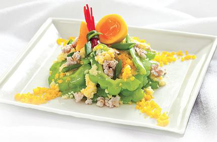

Cùng bắt tay làm thử thôi nào!
Nguyên liệu:
- - Khổ qua: 3 trái;
- - Thịt băm: 100g;
- - Trứng gà hoặc vịt: 1 quả
- - Hành củ, hành lá
- - Muối, tiêu, nước mắm, dầu ăn, bột ngọt.
Cách làm Mướp đắng xào trứng thịt băm
- - Mướp đắng chẻ đôi, bỏ ruột, thái mỏng, rửa sạch lại bằng nước lạnh. Hành lá phần đầu đập dập, cắt nhỏ, phần lá cắt khúc 2cm.
- - Thịt băm ướp với đầu hành băm, nước mắm, bột ngọt, để thấm. Trứng đánh tan, nêm nước mắm
- - Phi thơm hành củ băm, cho thịt vào xào, cho ít tiêu, thịt vừa chín tới cho mướp đắng vào xào chung, thấy mướp đắng đảo mềm tay thì cho trứng đã đánh tan vào đảo đều, nêm lại gia vị cho vừa ăn, trứng chín cho hành là vào đảo đều và tắt bếp.
Mách nhỏ nhà bếp: Rửa mướp đắng bằng nước lạnh pha muối để khi xào khổ qua giòn hơn.
Chúc mọi người ngon miệng!